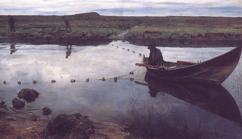
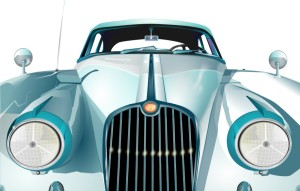
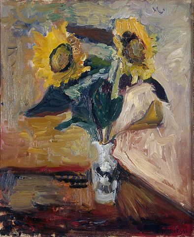
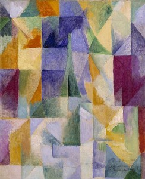

Realism is a style of art that attempts to depict the subject as it appears in real life, but with a focus on artistic interpretation rather than photographic precision.
Photorealism is an art style that aims to replicate the appearance of a photograph with extreme detail and precision on canvas or other mediums.
Painterly art is characterized by visible brushstrokes and texture in the paint, emphasizing the artist's hand in the creation process.
Abstract art does not attempt to represent reality, focusing instead on shapes, forms, colors, and textures to convey emotions and ideas.
